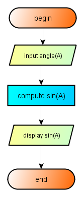
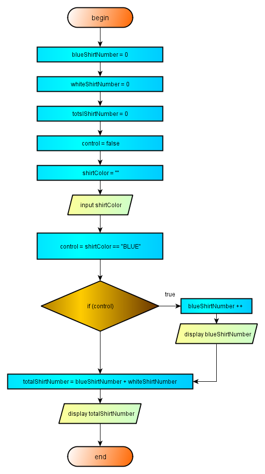

2.7 - Program Flow
Java programming language like the most of programming languages execute one statement at at a time, sequentially from to top to down. This is suitable for some programs, like the example below.

2.7-Image - 1 - Program with a linear flow.
This program has a simple task, read the angle value, compute the sinus of the angle, display the result and exit. However, programs are not calculators, often they have alternative paths for execution.
Execution of alternative program steps instead of the normal candidate in the sequentual top to down queue is called program branching. Branches of a program are alternative program steps. When branched, Java programs execute all the statements in the branch and after terminating all the program steps of the branch, they return to the normal top-to-down program path and execute the next statement after the the branching ststement.
A program may not branch by itself, there should be some impulse to force for diverting a program from its normal top-to-down execution path.
Historically, goto statements were used for altering the normal flow of a program. ın BASIC or FORTRAN, statements may be labeled by arbirtary line numbers not even by increasing order. Program flow may be guided to these labeled program lines by GO TO statements. This is called program jump, after execution of some number of jumps, it may be very difficult if not impoosible to follow the flow of the program. This is called a spaghetti program because it is confusing .for any one trying to read this program. Java has a reserved word goto, but it is not in use and therefore there is no possibility to produce spaghetti programs with Java.
Another way to induce the diversion of the program flow is to rely some boolean flags to a program flow control In this way, the program will always branch according to the affirmation of the boolean variable. If the value of the boolean variable is true, the program will branch to a new statement or to a statement block. Otherwise, the program will continue to his top-to-down course. This is called logical prgram branching. In logical program branching no user intervention may be exerted for diverting the program flow from its normal course. Only the conditions which alter the value of the logical program deflector may turn the direction of the program flow.
Logical program flow is of course the only way to go for a modern programmer. In java programming language, there is several statements which may set-up logical program diversion. The basic statement used for program branching in Java is if statement.
2.7.1 - If statement
If statement is applied in most basic form as,
if (boolean expression) statement
In this simple form only one statement is executed. The boolean expression which controls the if, may be a simple logical expression or a very complex one but by all means it should resolve to true or false , only these two boolean values and not any integer like some other programming languages. In previous section we have introduced many boolean forms which will result to true or false, all are suitable for controling the if statements.
When the decision expression in parenthesis resolve to true, the program will execute the statement indicated. When there is more than one statement to be executed in affirmative condition, a definition block must be organised. Even for a single statement, It is always a good idea a very good idea to open a definition block, even there is only a single statement to be executed with affirmative if statements. We will always follow this principle in our programs.
Let us try a simple decision statement with if block. First we will draw a flowchart representing the flow of the program. This flowchart is shown below:

2.7 - Image - 2 - Simple If Structure
The normal program flow as it can be understood from image -2 is the top-down linear flow followed after the if box. In the if box, only one control is performormed. This single control is based on the boolean value of the boolean control variable named control. When the value of the control variable of the if statement is true, the program flow is diverted from its normal execution path to a new side path where to additional statements are executed. These two statements are the increase of the variable blueShirtNumber by one and displaying the actual value of the variable blueShirtNumber. After executing these two statements, the program control returns to the normal execution path and executes the first statement after if statement, That is to the statement of the computation of totalShirtNumber. Then after, the normal execution of the program statements follows sequentially.
Notice that there is no control over the test condition for being false.When the test condition evaluates as false, the program flow will pass to the next statement after the conditional box as a result of the normal execution path and not because the value of the test condition of the conditional box is false. There no possibility to prevent the execution of the next step when the test fails. Here, we are only one possibility for branching, otherwise the program will follow its normal execution path. The program text related to the program whose flowchart is given above, is presented below:
package preliminary; public class SingleDecision { public static void main(String[] args){ int totalShirtNumber = 0; int blueShirtNumber = 0; int whiteShirtNumber = 0; boolean control = true; String shirtColor = ""; shirtColor = "BLUE"; control = shirtColor == "BLUE"; if(control) { blueShirtNumber ++; System.out.println("Actual Blue Shirts Number = " + blueShirtNumber); } // end if totalShirtNumber = blueShirtNumber + whiteShirtNumber; System.out.println("Actual Total Shirts Number = " + totalShirtNumber); } // end main } //end class SingleDecision
The result of this program :
Actual Blue Shirts Number = 1 Actual Total Shirts Number = 1
The example here covers an if statement with only one testing for truth. An if statement with two tests for truth is presented in the next section.